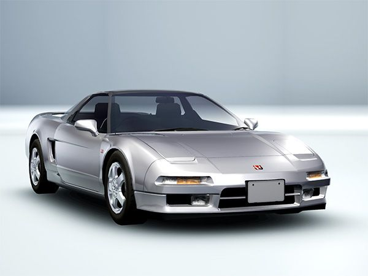
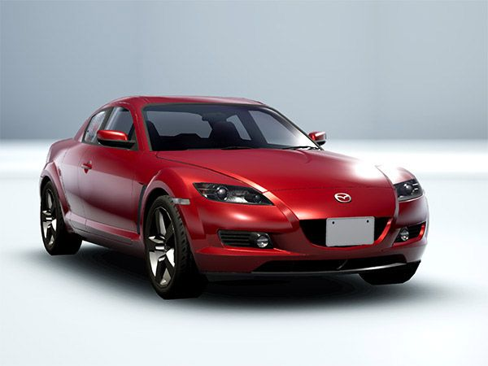

1990 Honda NSX — Lightweight aluminum body design
The 1990 Honda NSX (New Sportscar eXperimental) is a groundbreaking
sports car featuring a lightweight aluminum chassis and body. It was
the first mass-produced car to use such extensive aluminum
construction, enhancing performance and efficiency. The NSX was
powered by a mid-mounted 3.0L V6 engine with Honda's innovative VTEC
(Variable Valve Timing and Lift Electronic Control) system.
2003 Mazda RX-8

2003 Mazda RX-8 — Featuring the Renesis rotary engine
The 2003 Mazda RX-8 is a unique sports car known for its rotary
engine, the Renesis. Unlike traditional piston engines, the rotary
engine operates on a different principle, offering smooth power
delivery and high revving capabilities. The RX-8 features a 1.3L
rotary engine, rear-wheel drive, and distinctive freestyle rear doors
for easy rear seat access.
The 2017 Porsche Cayman 718 is a mid-engine sports car that combines
agility and power. It is powered by a turbocharged 2.0L flat-four
engine, delivering impressive performance. “718” refers to Porsche's
historic race cars from the late 1950s and early 1960s, emphasizing
its connection to motorsport heritage. Key features include Porsche
Stability Management (PSM) and a precise six-speed manual
transmission.
The 2022 Honda Civic Type-R is a high-performance hatchback designed
for track and road. It features a turbocharged 2.0L inline-four engine
producing impressive power and torque. Key technologies include
Honda's Dual Axis Strut Front Suspension for improved handling and the
advanced Honda Sensing safety suite.